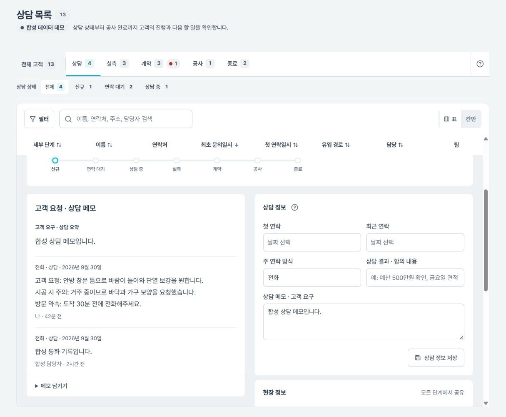

고객은 한 줄인데, 일은 다섯 단계였습니다
광고로 들어온 고객 문의는 구글 시트에 쌓이고, 상담부터 공사까지 한 사람이 엑셀 한 줄에서 관리하고 있었습니다. 그러다 보니 누가 어느 단계를 맡았는지, 언제 연락했는지, 어디서 막혔는지를 한눈에 볼 수 없었습니다.
목표: 고객이 상담 → 실측 → 계약 → 공사 → 종료 트랙을 지나가고,
각 구간에서 필요한 입력과 담당자 화면만 보이는 구조를 만든다.
기존 데이터를 잃지 않고 단계형으로 옮기기
- 원본 24열을 새 구조에 매핑기존 '현재단계' 값을 새 단계·세부 상태로 옮기는 대응표를 먼저 만들고, 모호한 값은 이관 전에 보고서로 확인
- 단계별 화면 분리상담에서는 연락·메모, 실측에서는 방문 일정·견적, 계약에서는 금액·공사 예정일처럼 그 단계에서 필요한 입력만 노출
- '우선순위' 필드 제거사람이 매기는 우선순위 대신 '기한 지남·오늘 할 일·응답 대기'처럼 실제 업무 신호로 대체
- 시각 기록 남기기첫 연락·견적·계약 시각을 남겨 응답 속도와 병목을 나중에 측정할 수 있게 설계
- 테스트 이관 후 운영 이관테스트 데이터로 이관 검증을 먼저 통과시킨 뒤 본 이관을 진행
"처음 쓰는 직원도 질문 없이 쓸 수 있을 것"
팀장 피드백으로 잡은 기준입니다. 화면이 어지러우면 "그냥 엑셀 쓸게요"로 돌아가 CRM이 쓰이지 않는다고 봤고, 이 기준으로 화면을 여러 차례 덜어냈습니다.
- 색은 키컬러 1개 + 보조 3개로: 상태 배지·버튼·칩 색이 늘어나 어지럽다는 피드백에 따라 브랜드 색 안에서만 쓰고, 빨강은 기한 초과·위험 동작에만 남김
- 상세 화면 위계 재정렬: 이름·연락처 → 고객 요청·상담 메모 → 현재 단계와 다음 실행 → 입력 폼 → 시스템 이력(접힘) 순. 모바일에서는 메모를 위로 올림
- 읽는 글자는 낮추지 않기: 고객 메모는 16px 이상·줄간격 1.7 이상, 핵심 정보를 옅은 회색으로 처리하지 않음. 현장에서 폰으로 이전 문의를 빠르게 읽는 상황을 기준으로 함
- 버튼은 주 실행 1개만 강조: 크기가 제각각이던 버튼을 44px 높이로 통일하고 위험 동작(종료)은 시각적으로 분리
- 툴팁은 정말 팁일 때만: 날짜에 붙던 불필요한 툴팁을 줄이고, 긴 설명은 '?' 도움말로 이동해 모바일에서도 탭으로 확인 가능
- 용어 통일: '아카이브'를 '종료'로 바꿔 탭·버튼·진행 표시를 하나의 말로 통일. 화면 명칭만 바꾸고 저장값은 유지해 데이터 변경 부담을 피함
- 레퍼런스는 구조만 참고: 상용 CRM UI 킷의 정보 구조(검색·필터 한 줄, 기본 정보와 활동 구분)만 가져오고, 색·자산은 복제하지 않고 고객사 브랜드 색을 유지

단계를 넘길 때 무엇을 반드시 물을 것인가
- 담당자 자동 이어받기: 한 번 지정한 담당자가 다음 단계에도 기본값으로 들어가고, 필요할 때만 바꾸는 방식. 매번 복사 버튼을 누르는 구조는 배제
- 단계 이동 모달: 모든 이동에서 담당자를 미리 채워 확인하게 하고, 방문 실측은 날짜·담당자 없이는 확정되지 않게 함
- 종료 사유는 칩으로: 모든 단계에서 종료할 때 사유를 받되, 셀렉트박스 대신 칩 버튼으로 고르고 '기타'만 직접 입력. 연락 불가는 상태가 아니라 종료 사유로 이동
- 부분 성공 방지: 단계는 넘어갔는데 담당·일정 저장은 실패하는 상황을 막도록 이동과 저장을 한 번에 처리
조직도 기준 권한, 비밀번호 없는 로그인
- 역할 3종 + 팀 범위: 관리자·중간관리자·담당자. 단계가 아니라 조직도의 팀을 열람·수정 범위의 기준으로 삼고, 목록에 '내 담당' 필터를 제공
- 접근 승인: 가입만으로는 데이터가 열리지 않고 관리자 승인 후 진입. 새 기기 로그인은 기존 권한을 승인 전까지 그대로 보호
- 비밀번호 폐지: 내부 도구라 비밀번호를 두지 않고 구글 로그인 또는 이메일 인증 코드만 허용. 로그아웃은 현재 브라우저만 끊도록 조정해 다른 기기의 세션은 유지
기획 → 설계 → 구현 → 검수, 승인은 사람이
- 과제 단위로 기록: 개선 요청마다 기획서에 요구사항과 완료 기준을 적고, 각 요구의 출처를
본인 판단과팀장 피드백으로 구분해 남김 - 역할 분리: 기획·UX 설계·구현·검수 에이전트가 순서대로 일하고, 검수가 반려하면 구현으로 되돌리는 루프를 두었음
- 승인 게이트: 기획 확정, 커밋, 운영 DB 반영, 배포를 각각 별도로 승인. 앞 단계 승인이 다음 단계를 대신하지 않도록 함
- 눈으로 다시 확인: UI를 바꾸면 PC 1440px·모바일 375px 실제 화면을 캡처해 확인하는 것을 검수 조건으로 고정
- 보안 경계: 개발에는 합성 데이터만 쓰고, 실제 고객정보·계정 정보는 AI 작업 범위에서 제외
약 4주 만에 제안 가능한 수준까지
고객 목록·상세·단계 이동·종료 흐름과 권한·로그인 구조까지 구현해 배포 환경에서 동작을 확인했고, 2026.09.10부터 10월 6일까지 v2.11.0까지 만들었고, 지금도 화면을 고치고 있습니다. 고객사에 CRM 서비스를 제안할 수 있는지 확인하는 것이 목적이었습니다.
실사용을 전제로 만든 도구가 아니어서 전환율·응답시간 같은 성과 수치는 적지 않았습니다. 화면 결정의 근거는 팀장 피드백과 직접 판단임을 그대로 밝힙니다.
화면을 꾸미는 일이 아니라 일하는 순서를 설계한 프로젝트
엑셀의 한 줄을 고객이 지나가는 흐름으로 다시 정의하고, 그 흐름 위에서 누가 무엇을 입력하고 넘기는지를 결정했습니다. AI에게 구현을 맡기되 요구의 출처를 기록하고, 승인 단계를 나누고, 결과는 화면으로 직접 검수하는 방식으로 기획자가 AI 협업 프로젝트를 이끄는 방법을 실제 업무에서 적용했습니다.